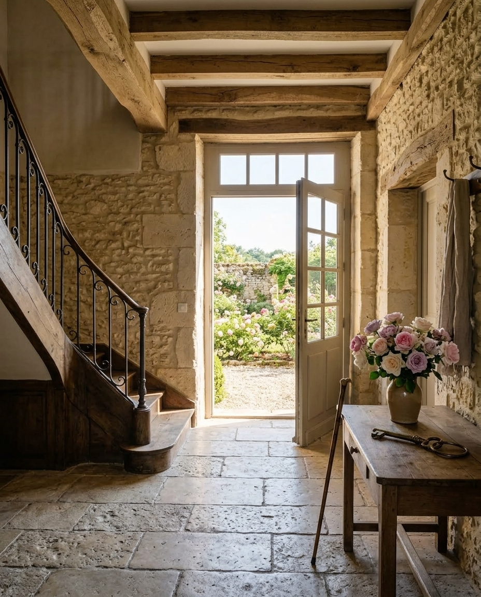

Page introuvable
Cette pièce n’existe pas. Revenez à l’entrée.
L’adresse a peut-être changé, ou une lettre s’est glissée de travers.

Page introuvable
L’adresse a peut-être changé, ou une lettre s’est glissée de travers.

Démonstration Soralva, établissement imaginaire, photos créées par intelligence artificielle